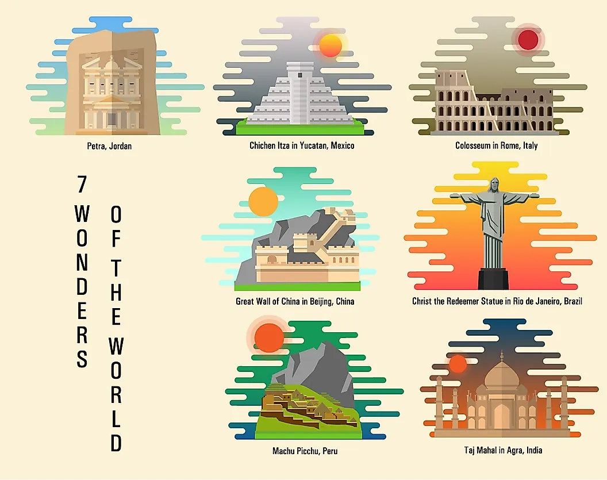

Over 2000 years ago, Greek travelers compiled a list of the most incredible marvels
they encountered, which would become famously known as The Seven Ancient Wonders of
the World. However, with the Pyramids of Giza being the only original survivor,
a Swiss organization decided to take matters into its own hands and update the list.
In 2001, New7Wonders Foundation asked the public which places they thought were the
world’s biggest wonders. After more than 100 million votes and deliberation between
200 potential candidates, these seven became the victors.
The Colosseum

The Colosseum in Rome, Italy, is the largest amphitheater built in human
history and is composed mainly of concrete, limestone, and wood. Emperor
Vespasian, who wanted a space for Romans to seek entertainment, ordered
the construction. This construction began around 72 CE and was completed
in 80 CE. The Colosseum, at 620 by 513 feet (189 by 156 meters), could
seat up to 50,000 viewers. Most events in The Colosseum were violent in
nature, largely consisting of gladiator fights, public executions, and
animal hunts. Between gladiators, prisoners, slaves, convicts, and other
entertainers, an estimated 400,000 people died during the 350 years in
which The Colosseum hosted events. It became a UNESCO World Heritage site
in 1980. Over 4 million people visit The Colosseum annually.
The Great Wall of China

In Northern China, the Great Wall of China is one of the largest
construction projects recorded in human history. Despite popular belief,
the Great Wall cannot be seen by the naked eye from outer space. While
estimates of its length vary, China’s National Administration of Cultural
Heritage reports the wall to be an impressive 13,170 miles (21,195
kilometers) long. Walking the entire wall nonstop would take approximately
17 months! Some work on the wall dates back to the 7th century BCE,
although the Ming Dynasty constructed the principal, most well-preserved
parts between 1368 and 1644. Contrary to popular belief, the Great Wall of
China is not a singular, connected wall. It actually consists of numerous
walls, some parallel for stretches, accompanied by watch towers and
platforms. China built the Great Wall to better protect its northern
border, although its effectiveness is debated. The Great Wall has been a
UNESCO World Heritage site since 1987. Today, over 10 million tourists
visit the wall every year. Visitors can easily access it from Beijing.
Petra

Petra, Jordan, is an ancient city whose buildings are carved into pink,
red, and white sandstone cliffs. It is one of the oldest existing cities
in the world and stretches over 100 square miles (259 square kilometers).
The Nabateans founded it in approximately the fourth century, chiseling
temples, dwellings, and tombs in the stone. The Nabateans also had very
advanced infrastructure, creating an impressive irrigation system of dams,
canals, and reservoirs that provided water for over 30,000 participants in
the otherwise arid zone. Some remnants of this irrigation system are still
visible today. Visitors may recognize the ancient city from Indiana Jones
and The Last Crusade, which filmed several scenes there. Petra became a
UNESCO World Heritage site in 1985, and currently, around 900,000 people
visit it annually.
Machu Picchu

Machu Picchu is an Incan ancient ruins site located in the Andes
Mountains, near the city of Cusco, Peru. Built in approximately 1450 CE,
the Incans used very impressive drystone techniques, snuggly fitting
together jagged stones like jigsaw pieces. Thanks to this intricate
building technique, many of the structures continue to stand to this day.
Peruvian farmer Agustín Lizárraga was the first recorded individual to
discover Machu Picchu in 1902. However, Herman Bingham brought it to the
attention of the Western world in 1911 with his discovery of it. There are
many theories about the reasons for Machu Picchu’s construction. Some
scholars believe that Machu Picchu was a holy convent known as “Virgins of
the Sun” for women who were dedicated to the Incan sun god, Inti. Other
theories include the city being a royal retreat for the Emporer Pachacuti
or being a trading hub or location to test new crops. In 1983, Machu
Picchu became a UNESCO World Heritage site, and today, approximately 1.5
million people visit it each year.
The Chichen Itza

Situated in Yucatan, Mexico, Chichén Itzá was a city built by the Mayan
people. The first settlements in the city began in approximately 435-600
CE, while the city would become abandoned hundreds of years later in 1250
CE. The Mayan tribe, Itzá, was responsible for many of the structures
built in this city. The most well-known pyramid in Chichén Itza is El
Castillo, a four-sided pyramid that is 185 feet (55.5 meters) wide and 78
feet (24 meters) tall. Impressively, the pyramid has 365 steps, each step
representing a day of the year. During the spring and fall equinoxes, a
shadow forms on the temple’s north stairway, creating the illusion of a
slithering serpent. Today, 26 ruins still stand in Chichén Itzá, and
approximately 2.5 million people visit the site every year. Most visitors
travel from Cancun or the Rivera Maya to see Chichén Itzá.
The Christ the Redeemer

Located in Rio de Janeiro, Brazil, Christ the Redeemer is a massive,
98-foot (30-meter) tall statue made of concrete and soapstone. It is the
youngest of the New Seven Wonders of the World. Princess Isabel introduced
the concept when she requested that an image of Jesus Christ be erected in
1888, honoring Brazil's abolition of slavery. The Roman Catholic
archdiocese of Rio de Janeiro re-proposed the idea in 1921, receiving
approval from President Epitácio Pessoa shortly after. It opened to the
public ten years later, in 1931. Around 2 million people visit the site
every year.
The Taj Mahal

The Taj Mahal, situated in Agra, India, is an impressive mausoleum
considered to be one of the most beautiful buildings constructed by
mankind and a key example of Islamic art. In 1632, Emperor Shah Jahān
ordered it to be built in honor of his wife, who died during the
childbirth of their 14th child. About 20,000 workers were involved in the
construction process, which lasted until about 1648. The complex also
included an expansive garden and a reflecting pool. The mausoleum consists
of white marble and semiprecious stones that form intricate floral and
geometric patterns. Shah Jahān additionally had the marble designed to
have a pink tint in the morning and a gold tint in the moonlight. Jahān
and his late wife, Mumtaz Mahal, were both buried in the building after.
In 1983, it became a UNESCO World Heritage Site. 7 to 8 million people
visit the Taj Mahal every year.